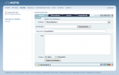
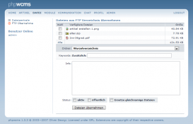

File Upload
Upload of more than one file
|  |
| Bild 1 - |
 |
| Bild 2 - |
| Bild 3 - |
For uploading a file into a folder, click onto the symbol  of the desired folder (Image 1). In the example "Folder 1" is selected.
of the desired folder (Image 1). In the example "Folder 1" is selected.
In the following shown folder the first you can see is the selection box "Folder" in which is written "+Folder 1". That means that the selected file will be uploaded into the folder "Folder 1". By clicking the field the menu of your folder structure will be opened. You can still decide to upload the file into an other folder. This works b yselecting an other folder in the selection box.
By clicking onto "Search" you can now select the file to upload from your harddisk. A window will be opened for accessing your harddisk where you can select the desired file.
After selecting the file you will see the path to your file in the field "Upload" (Image 2). Therefore it is possible to set some informations to your file. This can be usefull at some bigger sites to refind files using the search function in the file management, because the search searches also the filename, the keywords and the info text.
The following information is possible.
Keywords: Please insert here additional keywords for finding the files with the search function.
Info: Please insert here additional information for the file.
Therefore you can define the visible and public status (visible = active = file is visible in the image browser, public = the file can also be used by other editors. Active ist automatically set by the system. You can still decide whether you want to mark the file as "Public".
After adjusting the settings, click "Upload File".
The file will then be taken over into the file center und you are going back to the file center (Image 4). There you can see a thumbnail of an image. Also you can see at the begin of the line the following icon  . It shows you the kind of the file: An image. By uploading a Word or PDF file, you could see the following icons:
. It shows you the kind of the file: An image. By uploading a Word or PDF file, you could see the following icons:  oder
oder  . Then you can see the filename followed be a bunch of icons. Please read here -> Manage Files
. Then you can see the filename followed be a bunch of icons. Please read here -> Manage Files
Upload more then one file
and take over in phpwcms
|  |
| Image 1 - FTP Take over |
To upload more files, phpwcms offers a more elegant possiblity of a ftp take over. You only need an external program, user name and password to connect to the ftp server. So you can directly upload onto the webserver into the predefined folder (Standard: upload). Please use this instruction to upload more files:
- Upload the desired files with an ftp program into the folder „upload“ or in the defined folder.
- Click in "File" onto „FTP Take Over“ in the left navigation. You will see an overview of the uploaded files (Image 1)
- Choose one or more files in the column „Choice“ an. ADVICE: You can also select all files by clicking „All“. But this is only usefull if you want to take over all files in a folder.
- Choose in „Folder“ the folder in which you want th upload the files.
- Choose the status (active / public) of the files as with the upload of single files.
- Furthermore you have the possibility to overwrite existing files. The files must have exact the same name and must be taken over into the same folder. Setzten Sie dazu den Check then "Replace existing files".
- Click „FileTake Over“ to submit. According to the file size it can take a moment.
- After the successful take over of the files you are goung back to the file center overview.
Last Changes: Tuesday, 11. September 2007